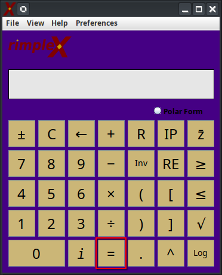
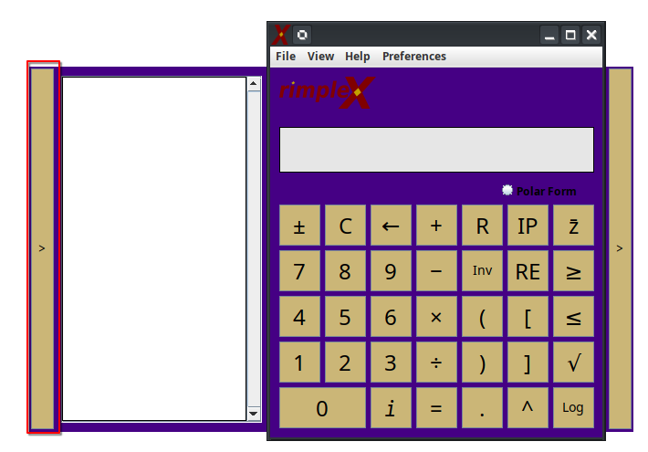
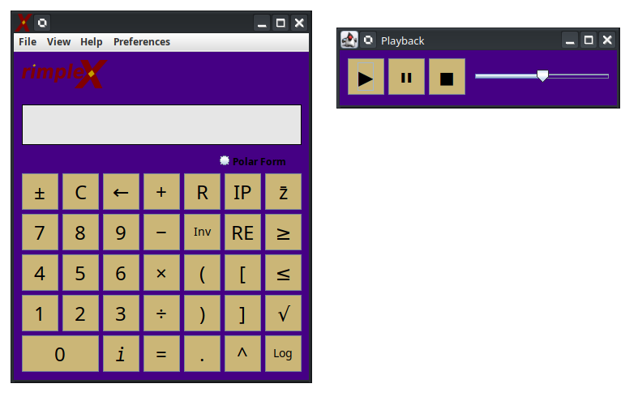

Documentación de Ayuda de RimpleX
Ingresar números en la calculadora:
Los números se pueden ingresar haciendo clic en la pantalla o presionando el número correspondiente en el teclado.

Ingresar operaciones en la calculadora:
Las operaciones se pueden ingresar haciendo clic en el ícono en la pantalla o presionando ciertas teclas en el teclado.

Leyenda:
- Cambiar signo - ± - Cambia el signo del operando actual.
- Limpiar - C - Borra el operando actual.
- Retroceso - ← - Elimina el carácter más reciente del operando.
- Sumar - + - Inicia la operación de suma.
- Restar - − - Inicia la operación de resta.
- Multiplicar - × - Inicia la operación de multiplicación.
- Dividir - ÷ - Inicia la operación de división.
- Restablecer - R - Borra tanto el operando actual como el cálculo/ecuación anterior.
- Inverso - Inv - Invierte el operando actual.
- Paréntesis - (/) - Inserta paréntesis en el operando.
- Decimal - . - Inserta un punto decimal en el operando.
- Parte imaginaria - IM - Muestra la parte imaginaria de una ecuación.
- Parte real - RE - Muestra la parte real de una ecuación.
- Forma polar - Polar - Muestra la forma polar de una ecuación.
- Conjugado - z̄ - Muestra el conjugado de una ecuación.
- Exponente - ^ - Inserta un exponente en el operando.
- Raíz cuadrada - √ - Inserta una operación de raíz cuadrada en el operando.
- Logaritmo - Log - Inserta una operación de logaritmo en el operando.
- Mayor o igual que - ≥ - Compara el operando actual.
- Menor o igual que - ≤ - Compara el operando actual.
Ejecutar un cálculo:
Presiona la tecla de igual "=" en el teclado o en la pantalla para calcular la ecuación actual en el lado izquierdo de la pantalla.

Revelar el historial de la sesión:
Al presionar la barra en el lado izquierdo se revela o se oculta el historial de la sesión.

Imprimir el historial de la sesión:
Haz clic en "Archivo" en la barra de herramientas y luego haz clic en "Imprimir sesión".

Revelar los pasos intermedios
Al presionar la barra en el lado derecho se revelan u ocultan los pasos intermedios.

Visualizar números complejos en el plano complejo:
Haz clic en el menú desplegable "Vista" y luego en "Plano Complejo" con un resultado aceptable en la pantalla. El plano complejo se abrirá en una nueva ventana.

Guardar una grabación:
Haz clic en el menú "Archivo" y luego en "Guardar grabación" para abrir la ventana de grabación.

Reproducir una grabación:
Haz clic en el menú "Archivo" y luego en "Abrir grabación" para abrir la ventana de reproducción.
